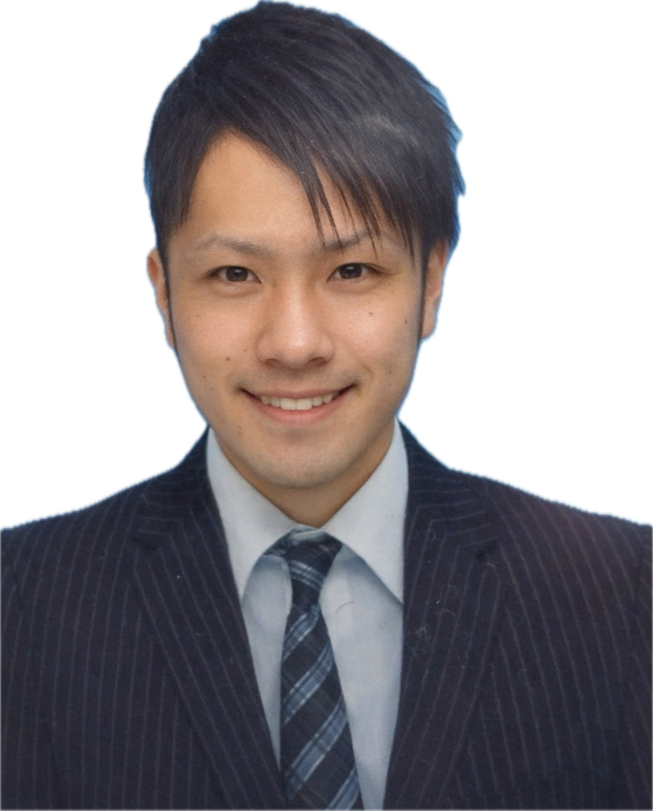

平松 広大（36歳）くらしとお金サロン代表
福岡県北九州市小倉南区出身。地元で生まれ育ち、今もこの地域で活動しています。
約15年間、飲食業界にて店長・エリア管理職・営業部長補佐・広報・商品開発・人事・マーケティングなどを経験しました。
約200店舗・年商約200億円規模の西日本エリアを営業部長補佐として統括・管理してきました。
これまでに関わってきた人数は、延べ10,000名以上のマネジメントを経験しています。
人と向き合い、数字と向き合い、現場の課題を一つずつ解決してきました。
その後独立し、年商約4億円規模の店舗経営を経験しました。
金融業界出身ではなく、自身で学び、実践してきた立場です。
同じように悩み、考えてきた経験があるからこそ、皆様に寄り添えると考えています。
現在はFP3級技能士として、投資・事業を行いながらサロンを運営しています。
数字だけでなく、人の不安や想いに寄り添うことを大切にしています。
【バックアップ体制】
当サロンでは、必要に応じて専門家やスポンサー様、お取引先様と提携しています。
- 税理士法人松本会計（当社顧問税理士事務所）
- 日本FP協会
- 山口フィナンシャルグループ 北九州銀行 守恒支店
- 北九州商工会議所 所属
- 日本政策金融公庫 北九州支店